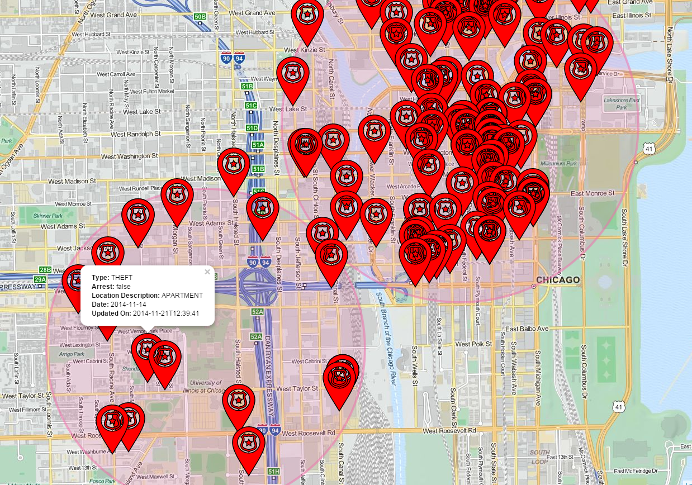
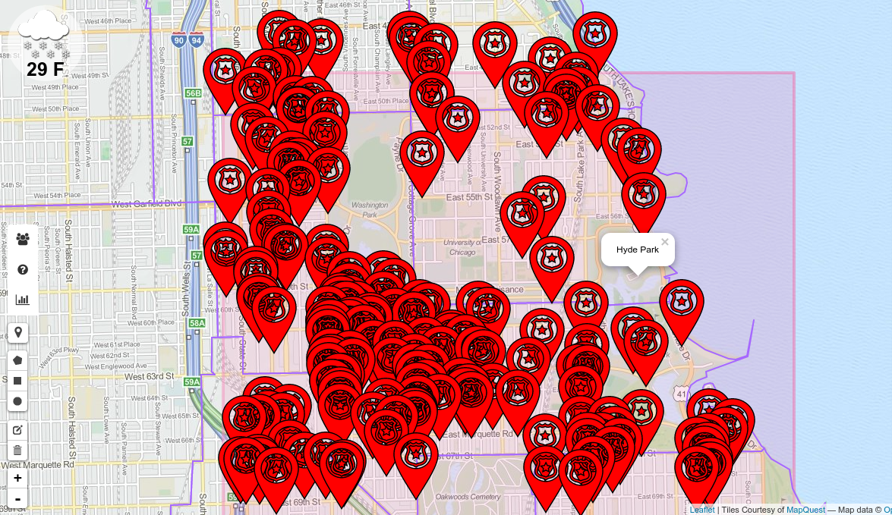
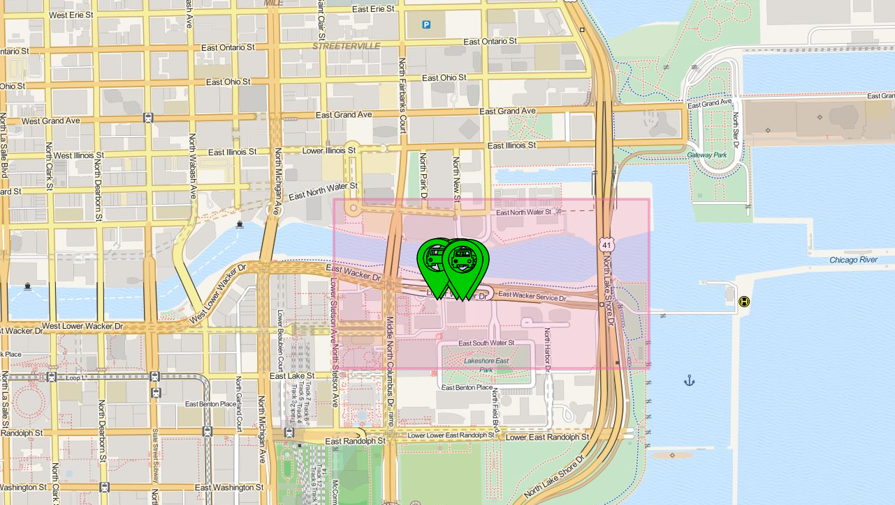

Patterns
Crime around UIC vs The Loop
After comparing crime event markers around UIC and The Loop for both the last week and the last month, the following patterns can be observed:
- The quantity of crime events recorded in The Loop is far greater than crime events near UIC.
- The vast majority of crime around UIC is THEFT, followed by a few other types.
- The majority of crime in The Loop does seem to be THEFT, but is closely followed by DECEPTIVE PRACTICE, BATTERY, and CRIMINAL TRESPASS.
These observations demonstrate a far greater variety and quantity of crime in The Loop than near UIC. Evidently UIC is safer than you'd think.
Crime around Hyde Park
From observing how crime is concentrated on specific areas we can see how extreme this is especially around the Hyde Park area. We observed that:
- The number of crimes drops significantly in Hyde Park compared to regions surrounding it.
- The vast majority of crime in Hyde Park is THEFT and some ROBBERY.
- There is more violent crimes in the areas that surround Hyde park such as BATTERY and PROSTITUTION.
It's hard to say why this happens. A cause might be that since the University Of Illinois is there, the UCPD is able to deal with some of the crime. Another issue might be that the income of recidents in Hyde Park have a higher income than those of the surrounding areas.
Other Findings
Lower Wacker car groupings
In the screenshot below, you can see a small grouping of abandoned cars on Lower Wacker near Navy Pier. We noticed this type of grouping in a few places and are a bit perplexed as to their origin. Perhaps it's a towing agency's storage lot? That still wouldn't explain why they are reported as "abandoned" and not "towed".
CTA longitude / latitude accuracy
It seems that the CTA buses' location is given to AT LEAST 15 digits to the right of the decimal. This was determined by counting the digits on a single bus' location and there were 15 (some other buses might have reported more.What does the 15th decimal of lat/lon mean? If you add 1 to the 15th digit, you are now at an order of magnitude above nanometer scale.
Example using JS math found at the to of this page:
If you add 1 to the least significant digit of the latitude:
lat1 = 41.86403739452362;
lon1 = 87.7445912361145;
lat2 = 41.86403739452363;
lon2 = 87.744591236115;
This comes out to a diff of 4.119573810999978e-11 km, or 4.11957e-8 m, or 41.1957 nanometers! While we aren't actually making use of such a precise scale of data, it is worthwhile to note the quality of data we have access to.